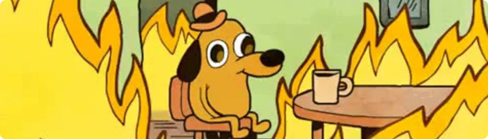

Курил. Уснул. Пожар. Что дальше?
Мы симулировали для вас ситуацию возгорания в жилом помещении. Узнайте, знаете, ли вы как действовать в такой ситуации.
Вопрос 1/5
Вы просыпаетесь в комнате полной дыма и языков пламени.
Каковы будутваши следующие действия?